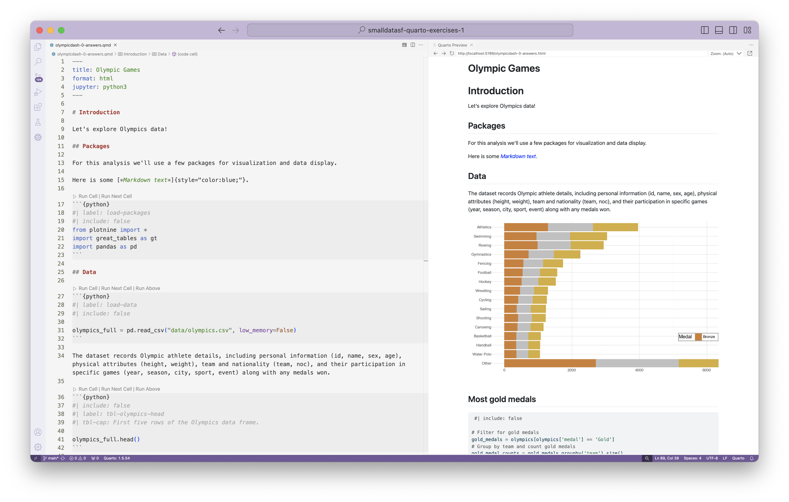
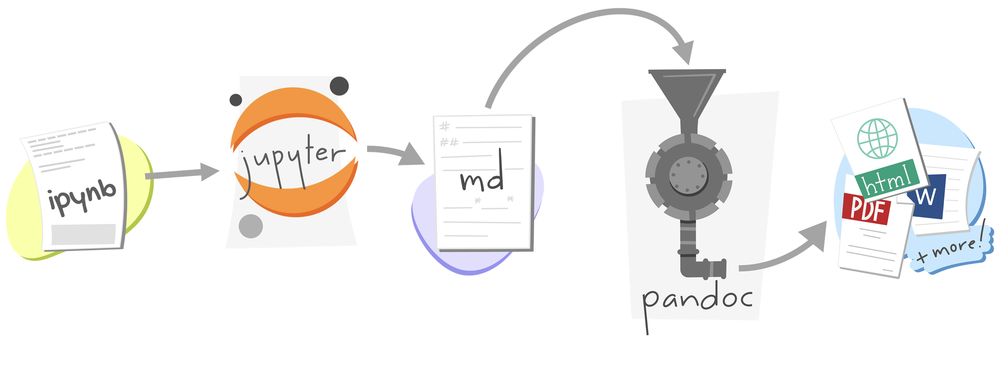
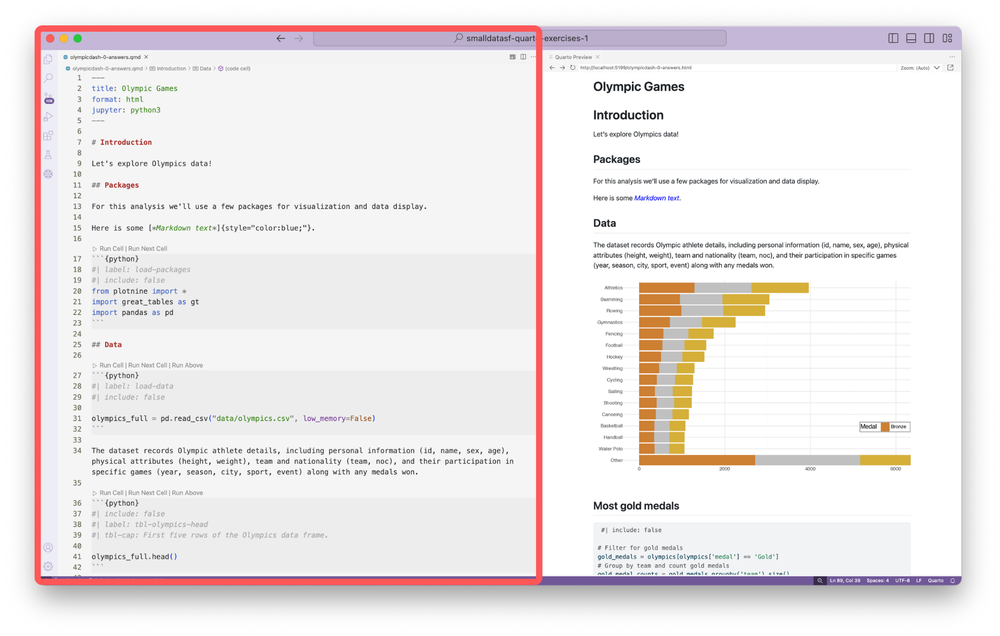
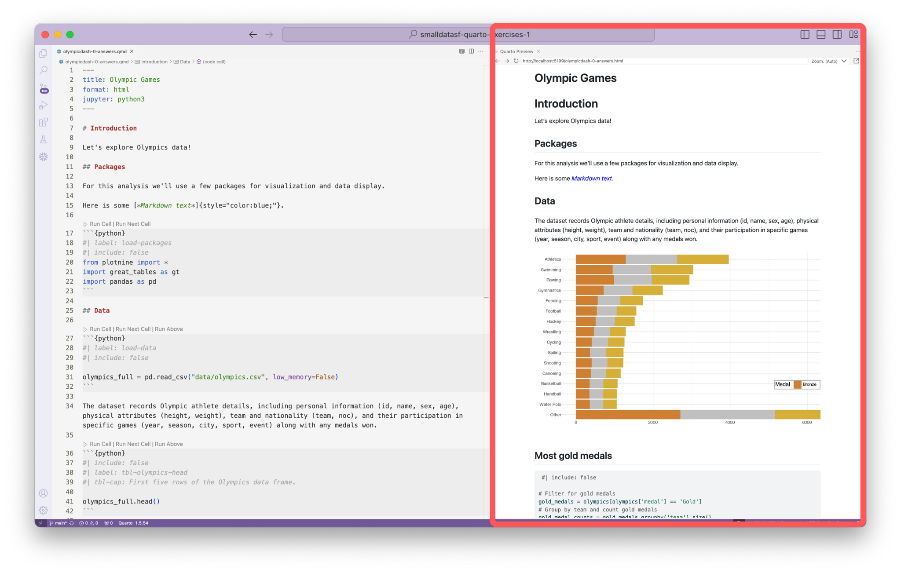

04:00
Intro to Quarto
Small Data SF
Sara Altman
Posit, PBC
Isabella Velásquez
Posit, PBC
Welcome
About us
Data Science Educator
Developer Relations, Posit
Sara Altman
About us
Sr. Product Marketing Manager
Developer Relations, Posit
About you
Please share
- Name
- Professional affiliation
- What do you use computational notebooks for?
- What do you hope to get out of this tutorial?
Meeting you where you are
These materials are pitched at someone who:
knows some Python + Markdown
has worked in VS Code
wants to learn about Quarto
We’ll teach you
What is Quarto
How to create documents with Quarto
How to create a dashboard from a notebook
Workshop structure
My turn
- Lecture segments
- Feel free to just watch, take notes, browse docs, or tinker around with the code
Our turn
- Lecture segments + live coding
- Follow along with live coding
Your turn
- Practice exercises for you
- Work on your own or with the person next to you
Getting help
During my turn and your turn segments – raise your hand
During our turn segments – also feel free to raise your hand for questions but if your question seems specific to your setup, we might come around and help during the next your turn break
A tour of Quarto
Sit back and enjoy!
- Understanding the relationship between Quarto and the Jupyter engine
- Using Quarto in VS Code
- Creating Quarto documents (metadata, markdown text, and code)
- Working with Quarto projects
What is Quarto?
Quarto …
is an innovative, open-source scientific and technical publishing system compatible with Jupyter Notebooks and other popular media.
With Quarto …
you can weave together narrative and code to produce elegantly formatted output such as documents, web pages, blog posts, books, dashboards, and more, with…
- consistent implementation of attractive and handy features across outputs: tabsets, code-folding, syntax highlighting, etc.
- defaults that meet accessibility guidelines as well as features that enable good practices for producing accessible documents
- natively multi-lingual, supporting for multiple languages like Python, Julia, Observable, and more via the Jupyter engine for executable code chunks
A pause
Where does the name “Quarto” come from?
Quarto formats
One install, “Batteries included”
Quarto comes “batteries included” straight out of the box:
HTML reports and websites
PDF reports
MS Office (Word, Powerpoint)
Presentations (Powerpoint, Beamer,
revealjs)Books
Dashboards
…
- Any language, exact same approach and syntax
Many Quarto formats
| Feature | Quarto |
|---|---|
| Basic Formats | html, pdf, docx |
| Beamer | beamer |
| PowerPoint | pptx |
| HTML Slides | revealjs |
| Advanced Layout | Quarto Article Layout |
| Cross References | Quarto Crossrefs |
| Websites & Blogs | Quarto Websites, Quarto Blogs |
| Books | Quarto Books |
| Interactivity | Quarto Interactive Documents |
| Journal Articles | Journal Articles |
| Dashboards | Dashboards |
How it works
Revisit: What is Quarto?
Quarto is a command line interface (CLI) that renders plain text formats (.qmd, .rmd, .md) OR mixed formats (.ipynb/Jupyter notebook) into static PDF/Word/HTML reports, books, websites, presentations and more.
Usage: quarto
Version: 1.5.57
Description:
Quarto CLI
Options:
-h, --help - Show this help.
-V, --version - Show the version number for this program.
Commands:
render [input] [args...] - Render files or projects to various document types.
preview [file] [args...] - Render and preview a document or website project.
serve [input] - Serve a Shiny interactive document.
create [type] [commands...] - Create a Quarto project or extension
create-project [dir] - Create a project for rendering multiple documents
convert <input> - Convert documents to alternate representations.
pandoc [args...] - Run the version of Pandoc embedded within Quarto.
typst [args...] - Run the version of Typst embedded within Quarto.
run [script] [args...] - Run a TypeScript, R, Python, or Lua script.
add <extension> - Add an extension to this folder or project
install [target...] - Installs an extension or global dependency.
publish [provider] [path] - Publish a document or project to a provider.
check [target] - Verify correct functioning of Quarto installation.
help [command] - Show this help or the help of a sub-command.Under the hood
jupyterevaluates Python code and returns a.mdfile along with the evaluated code- Quarto applies Lua filters + CSS/LaTeX which is then evaluated alongside the
.mdfile by Pandoc and converted to a final output format
Under the hood
with a wider lens…

jupyterorknitrevaluates Python, Julia, R, or Observable code and returns a.mdfile along with the evaluated code- Quarto applies Lua filters + CSS/LaTeX which is then evaluated alongside the
.mdfile by Pandoc and converted to a final output format
Converting notebooks
You can convert between .ipynb and .qmd representations of a notebook using the quarto convert command.
For example:
Quarto and VS Code
From the comfort of your own homeworkspace


Quarto VS Code extension
- Integrated render and preview for Quarto documents.
- Syntax highlighting for markdown and embedded languages
- Completion and diagnostics for YAML options
- Completion for embedded languages (e.g. Python, R, Julia, etc.)
- Commands and key-bindings for running cells and selected lines
Previewing and rendering
Previewing and rendering
Previewing and rendering
Previewing
in VS Code
- Option 1: In the Terminal via
quarto preview
- Option 2: Using the Quarto Extension and clicking on Preview
- Option 3: Ctrl + Shift + K
Rendering
in VS Code
- Option 1: In the Terminal via
quarto render
- Option 2: Use the Command Palette: Quarto: Render Project
Your turn
1. Software: Download and install Python and the latest version of Quarto:
- Python 3: https://www.python.org/downloads/
- Quarto 1.5.57: https://quarto.org/docs/get-started/
2. Tools: Dowload and install VS Code and Jupyter and the Quarto extensions:
- VS Code: https://code.visualstudio.com/
- Quarto Extension: https://marketplace.visualstudio.com/items?itemName=quarto.quarto
- Jupyter Extension: https://marketplace.visualstudio.com/items?itemName=ms-toolsai.jupyter
Your turn
3. Exercises: Go to pos.it/smalldatasf-quarto-exercises, click on Use this template then Create a new repository. Check Include all branches. Choose your personal GitHub repo as the Owner and give the repository a name.
4. Packages: Open VS Code. Under Start, click on Clone Git Repository, and paste the URL of your exercise repo.
- Open the cloned project. In the Command Palette, go to
Python: Create Environment...and chooseVenv, then choose the (latest) Python version you have installed. - Check the box for
requirements.txtin the Select dependencies to install menu and hit OK.
See full instructions under Setup: pos.it/smalldatasf-quarto-workshop
Then: In VS Code, open the olympicdash-0.ipynb file.
Convert the file to
.qmdusingquarto convert.Preview the
.qmdfile.
Quarto documents
Anatomy of a Quarto document
Three components:
Metadata: YAML
Text: Markdown
Code: Executed via
jupyterorknitr
Weave it all together, and you have beautiful, powerful, and useful outputs!
Anatomy of a Quarto document
Metadata: YAML
Anatomy of a Quarto document
Text: Markdown
my-document.qmd
- Markdown is a lightweight language for creating formatted text
- Quarto is based on Pandoc and uses its variation of markdown as its underlying document syntax
Anatomy of a Quarto document
Text: Markdown
The `olympic.csv` dataset records [**Olympic**](https://en.wikipedia.org/wiki/Olympic_Games) athlete details.
The olympic.csv dataset records Olympic athlete details.
Anatomy of a Quarto document
Text: Markdown
| Markdown syntax | Output |
|---|---|
|
italics and bold |
|
superscript2 / subscript2 |
|
|
|
verbatim code |
Anatomy of a Quarto document
Code
Anatomy of a Quarto document
Code
- Code chunks begin and end with three backticks (usually)
- Code chunks are identified with a programming language in between
{}
Anatomy of a Quarto document
Inline code executes code within Markdown
Results in:
The number of medals is 5.
Anatomy of a Quarto document
Code can include optional chunk options, in YAML style, identified by #| at the beginning of the line
Anatomy of a Quarto document
Code can include optional chunk options, in YAML style, identified by #| at the beginning of the line
---
title: "Olympic Games"
format: html
---
This dataset records Olympic athlete details.
```{python}
#| include: false
#| fig.alt: "A scatterplot with country on the x-axis and medals on the y-axis."
from plotnine import ggplot, aes, geom_bar
(
ggplot(mpg, aes(x = "country", y = "medals"))
+ geom_bar()
)
```Anatomy of a Quarto document
Code can include optional chunk options, in YAML style, identified by #| at the beginning of the line
| Option | Description |
|---|---|
eval |
Evaluate the code chunk |
echo |
Include the source code |
warning |
Include warnings |
include |
Include code and results |
Other options: https://quarto.org/docs/computations/execution-options.html
Your turn
In VS Code, open the olympicdash-0.qmd file.
In the YAML, add an
authorfield and add your name.Add some Markdown text to the document.
For one of the tables, add the chunk option
echo: false.Add this to the top of the plotnine chart to set the order of
medalvariable.
Save in between each step and see how the preview changes.
Authoring Quarto
Images and links
| Markdown syntax | Output |
|---|---|
|
https://quarto.org |
|
Quarto |
|
 |
Tables
Tables
```{markdown}
| Right | Left | Default | Center |
|------:|:-----|---------|:------:|
| 12 | 12 | 12 | 12 |
| 123 | 123 | 123 | 123 |
| 1 | 1 | 1 | 1 |
```| Right | Left | Default | Center |
|---|---|---|---|
| 12 | 12 | 12 | 12 |
| 123 | 123 | 123 | 123 |
| 1 | 1 | 1 | 1 |
Divs and Spans
You can add classes, attributes, and other identifiers to content using Divs and Spans.
Divs
::: {.border}
This content can be styled with a border
:::Spans
[This is *some text*]{.class key="val"}Divs
Callout blocks
my-document.qmd
Tip
Note that there are five types of callouts, including: note, tip, warning, caution, and important.
Divs
Multiple columns
my-document.qmd
::: {layout-ncol=2}

Photo by <a href="https://unsplash.com/@corneliusventures?utm_source=unsplash&utm_medium=referral&utm_content=creditCopyText">Cornelius Ventures</a> on <a href="https://unsplash.com/s/photos/penguin?utm_source=unsplash&utm_medium=referral&utm_content=creditCopyText">Unsplash</a>
:::
Photo by Cornelius Ventures on Unsplash
Divs
Tabsets
my-document.qmd
Spans
Theming
Your turn
Change the html theme to
sketchy. (See https://quarto.org/docs/output-formats/html-themes.html for documentation on HTML theming.)Edit the Markdown text you wrote in the previous exercise so that one of the words is blue.
Add a code chunk cell with the option
include: false. Use the dataset to find the most gold medals by team.Use inline code to write a sentence such as: “The most gold medals won by a single team are [count].”
Add a Div of your choice.
Changing formats
Changing formats
Changing formats
Changing formats
Documents to projects
Anatomy of a Quarto project
A Quarto Project is a directory that contains a file called
_quarto.yml.
This is a Quarto Project.
my-folder/
├── _quarto.yml
├── my-document.ipynbThis is not.
my-folder/
├── my-document.ipynb_quarto.yml
A YAML file with particular keys and values that Quarto recognizes. Unrecognized keys are ignored.
_quarto.yml
A YAML file with particular keys and values that Quarto recognizes. Unrecognized keys are ignored.
_quarto.yml
project:
type: website
output-dir: docs
resources:
- images/python-logo.png
website:
page-navigation: true
title: "From Notebooks to Dashboards with Quarto"
description: "Small Data SF - From Notebooks to Dashboards with Quarto Workshop"
repo-url: https://github.com/posit-dev/small-data-sf-quarto-workshop
repo-actions: [edit, issue]
open-graph: true
sidebar:
background: "#FF6349"
logo: "images/logo.png"
pinned: true
align: center
tools:
- icon: github
href: https://github.com/posit-dev/small-data-sf-quarto-workshop
text: "GitHub"
- icon: code-square
href: https://posit.cloud
text: "Posit Cloud"
style: docked
search: true
collapse-level: 2
contents:
- href: index.qmd
text: Home
- href: setup.qmd
text: Setup
- section: "Modules"
contents:
- href: 0-intro-to-quarto/index.qmd
- href: 1-hello-dashboards/index.qmd
- href: 2-components-theming/index.qmd
- href: 3-deployment/index.qmd
page-footer:
right: "This page is built with 🩷 and [Quarto](https://quarto.org/)."
left: "© Copyright 2024"
background: "#FF6A8A"
format:
html:
theme:
light: [cosmo, style/light.scss]
dark: [cosmo, style/light.scss, style/dark.scss]
linkcolor: "#FF75EF"
toc: true
code-copy: true
code-overflow: wrap
mainfont: "Space Grotesk"
execute:
freeze: auto
echo: true
editor: sourceQuarto projects
Quarto projects have a
_quarto.ymlfileThe
typefield in this file indicates the type of project:default: Collection of documentswebsite: Websites (and blogs)book: Booksmanuscript: Manuscripts (Quarto 1.4+)dashboard: Dashboards (Quarto 1.4+)
Wrap up
A tour of Quarto
- Understanding the relationship between Quarto and the Jupyter engine
- Using Quarto in VS Code
- Creating Quarto documents (metadata, markdown text, and code)
- Working with Quarto projects
thank you!
any questions?